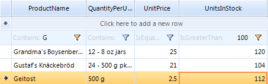

Setting Filters Programmatically (simple descriptors)
RadGridView FilterDescriptors
The RadGridView control includes FilterDescriptors property of the GridViewTemplate which is exposed in RadGridView class for MasterTemplate instance. This collection stores filter descriptors used for filtering operation. The most important classes are:
FilterDescriptor - implements filtering property
(field) name, filtering operator and value. Used to define simple filtering
expressions like Country = "Germany".CompositeFilterDescriptor - a collection of multiple
filter descriptors with logical operator. Used to define complex filtering
expressions like (Country = "Germany" AND (City = "Berlin" OR City
= "Aachen")).
Using simple FilterDescriptor:
[C#] Using simple filter descriptor
FilterDescriptor filter = new FilterDescriptor();
filter.PropertyName = "ProductName";
filter.Operator = FilterOperator.Contains;
filter.Value = "Qu";
filter.IsFilterEditor = true;
this.radGridView1.FilterDescriptors.Add(filter);
[VB.NET] Using simple filter descriptor
Dim filter As New FilterDescriptor()
filter.PropertyName = "ProductName"
filter.[Operator] = FilterOperator.Contains
filter.Value = "Qu"
filter.IsFilterEditor = True
Me.RadGridView1.FilterDescriptors.Add(filter)

FilterDescriptor major properties:
The PropertyName property defines the property, which
values will be filtered.The Operator property allows you to define the type of
operator. The possible values are: IsLike, IsNotLike, IsLessThan,
IsLessThanOrEqualTo, IsEqualTo, IsNotEqualTo, IsGreaterThanOrEqualTo,
IsGreaterThan, StartsWith, EndsWith, Contains, NotContains, IsNull,
IsNotNull, IsContainedIn, IsNotContainedIn.The Value property is the value your data will be
compared against.
When you add a new descriptor to the collection, the data is automatically filtered according to it.
Each data column (represented by GridViewDataColumn) has a FilterDescriptor
property that can be assigned a FilterDescriptor
object:
[C#] Assigning a filter descriptor object
FilterDescriptor filter1 = new FilterDescriptor();
filter1.Operator = FilterOperator.Contains;
filter1.Value = "Qu";
filter1.IsFilterEditor = true;
this.radGridView1.Columns["ProductName"].FilterDescriptor = filter1;
[VB.NET] Assigning a filter descriptor object
Dim filter1 As New FilterDescriptor()
filter1.[Operator] = FilterOperator.Contains
filter1.Value = "Qu"
filter1.IsFilterEditor = True
Me.RadGridView1.Columns("ProductName").FilterDescriptor = filter1
Setting Multiple Filters
You can add filters to multiple columns by adding a FilterDescriptor for each one of them:
[C#] Setting multiple filters
FilterDescriptor filterUnitsInStock = new FilterDescriptor();
filterUnitsInStock.PropertyName = "UnitsInStock";
filterUnitsInStock.Operator = FilterOperator.IsGreaterThan;
filterUnitsInStock.Value = 100;
filterUnitsInStock.IsFilterEditor = true;
this.radGridView1.FilterDescriptors.Add(filterUnitsInStock);
FilterDescriptor filterProductName = new FilterDescriptor();
filterProductName.PropertyName = "ProductName";
filterProductName.Operator = FilterOperator.StartsWith;
filterProductName.Value = "G";
filterProductName.IsFilterEditor = true;
this.radGridView1.FilterDescriptors.Add(filterProductName);
[VB.NET] Setting multiple filters
Dim filterUnitsInStock As New FilterDescriptor()
filterUnitsInStock.PropertyName = "UnitsInStock"
filterUnitsInStock.[Operator] = FilterOperator.IsGreaterThan
filterUnitsInStock.Value = 100
filterUnitsInStock.IsFilterEditor = True
Me.RadGridView1.FilterDescriptors.Add(filterUnitsInStock)
Dim filterProductName As New FilterDescriptor()
filterProductName.PropertyName = "ProductName"
filterProductName.[Operator] = FilterOperator.StartsWith
filterProductName.Value = "G"
filterProductName.IsFilterEditor = True
Me.RadGridView1.FilterDescriptors.Add(filterProductName)
